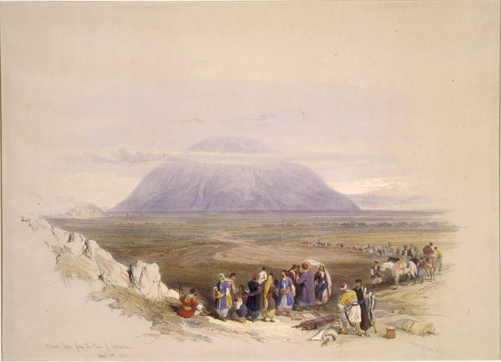

Joshua 19 — The Mister Translation

⚠ This is a traveller’s view of the mountain from the plain, made in April 1839 and printed in 1842, and it shows what no verse of the chapter says: the mountain standing by itself. Joshua 19 never describes Tabor. It writes three borders against it, Issachar’s “reached to Tabor” (v22), Zebulun’s past Chisloth-tabor (v12) and Naphtali’s at Aznoth-tabor (v34), and the names are all the text gives. The lithographer has drawn the one landmark all three lines share; whether the three borders actually meet on it the Hebrew does not say.

★★★ This chapter numbers its lots, and the numbers run from second to seventh. The ordinal rides on the noun in six verses, one each: second at v1, third at v10, fourth at v17, fifth at v24, sixth at v32, seventh at v40. The phrase ha-goral ha-sheni, ‘the second lot,’ stands in one verse of the Hebrew Bible, and each of the other five ordinals is alone in its verse the same way. Benjamin’s lot, thrown at Shiloh in 18:11 (already on these pages), carries no ordinal; it simply “came up.” So the first of the seven is first only because the next is called second. ‘The first lot,’ ha-goral ha-rishon, stands in two verses of the Hebrew Bible, 1 Chronicles 24:7 and 25:9 (not yet on these pages), where the courses of the priests and of the singers are drawn by lot, and the book of Joshua never says it.
★★ “Went out” is the verb of five of these six lots, and “came up” of one. Simeon’s lot went out (vayetse), as do Issachar’s, Asher’s, Naphtali’s and Dan’s; Zebulun’s alone came up (v10), the second lot in the book after Benjamin’s to do so. All ten lots and their opening verbs are counted at the goral entry.
★★ “In the midst of the inheritance of the sons of Judah” is a promise Judah had already made. Judges 1:3 (already on these pages) has Judah say to Simeon his brother, “Go up with me into my allotted portion, and let us fight against the Canaanite; and I too will go with you into yours.” The word is the same goral, ‘lot.’ Simeon goes, and 1:17 (already on these pages) names the city the two tribes struck together Hormah, a name in Simeon’s own list at v4.
⚠ One witness takes the lot out of the verse. The ASV reads ‘And the second lot came out’, the KJV ‘And the second lot came forth’ and the NIV ‘The second lot came out’. The TLB alone drops both the lot and the ordinal: Simeon ‘received the next assignment of land’.
★★★ Thirteen cities, and the Hebrew names fourteen. Vv2–6 run three, three, three, three and two: Beersheba, Sheba, Moladah; Hazar-shual, Balah, Ezem; Eltolad, Bethul, Hormah; Ziklag, Beth-marcaboth, Hazar-susah; Beth-lebaoth, Sharuhen. Verse 6 totals them “thirteen cities and their villages.” The surplus is Sheba, which the Hebrew joins to Beersheba with a plain and (be’er-sheva ve-sheva). The shelf splits on that word. The ASV reads ‘Beer-sheba, or Sheba’, the KJV ‘Beersheba, or Sheba’ and the NIV ‘Beersheba (or Sheba)’: one town with two names, and thirteen. The Geneva keeps two, ‘Beersheba, and Sheba, and Moladah’, and the TLB adds up what the Hebrew does not, ‘these seventeen cities’, by counting Sheba and fusing En-rimmon. The parallel list at 1 Chronicles 4:28–31 (not yet on these pages) has thirteen names and no Sheba — Beer-sheba, Moladah, Hazar-shual, Bilhah, Ezem, Tolad, Bethuel, Hormah, Ziklag, Beth-marcaboth, Hazar-susim, Beth-biri and Shaaraim — and closes, “These were their cities until the reign of David.” The Hebrew here does not say which reading is right. This translation prints ‘and Sheba’ and lets the total stand beside the list.
★★ Judah’s lists already hold eleven of Simeon’s eighteen names, and six of them in the same order. Moladah (15:26), Hazar-shual and Beersheba (15:28), Ezem (15:29), Eltolad and Hormah (15:30), Ziklag (15:31), Ain and Rimmon (15:32) and Ether and Ashan (15:42) all stand in Judah’s southern and lowland lists (already on these pages) in the same letters. Moladah, Hazar-shual, Ezem, Eltolad, Hormah and Ziklag run in that order in both. The other seven names (Sheba, Balah, Bethul, Beth-marcaboth, Hazar-susah, Beth-lebaoth and Sharuhen) are Simeon’s alone. Two of the differences fall in matching places. Judah’s list has Shema directly before Moladah (15:26) where this one has Sheva, and the letters differ by one (m for b); and after Ziklag Judah has Madmannah and Sansannah (15:31) where this list has Beth-marcaboth, ‘house of chariots,’ and Hazar-susah, ‘village of a mare.’ The text does not say whether these are two towns or two names. What it shows is that “in the midst of Judah” (v1) is literal: Simeon’s inheritance is, in the main, a run of Judah’s southern towns.
★★ Hormah and Ziklag are the two towns with a later life. Hormah, in v4, is the name Judah and Simeon gave a city together (Judges 1:17, already on these pages). Ziklag, in v5, is the town of which 1 Samuel 27:6 (not yet on these pages) says that it “has belonged to the kings of Judah to this day,” and where David stays two days in 2 Samuel 1:1 (already on these pages). The Chronicler’s sentence for the whole list, “until the reign of David” (1 Chronicles 4:31, not yet on these pages), carries Simeon’s towns to that king too.
⚠ Is Baalath-beer the same place as Ramah of the Negev? The Hebrew puts the two names side by side with no word between them. The NIV makes the second a gloss on the first, ‘Baalath Beer (Ramah in the Negev)’; the TLB turns it into an alias, ‘also known as Ramah-in-the-Negeb’; the Geneva separates them, ‘Baalath Beer, and Ramah, Southward’. This translation prints the two names with a comma between them, as the Hebrew does, and does not choose.
★★★ The verb of Jacob’s sentence on Simeon is the root of this book’s word for a portion. Genesis 49:7 (already on these pages) ends Jacob’s words to Simeon and Levi, “I will divide them in Jacob and scatter them in Israel.” The form achallekem, ‘I will divide them,’ stands in one verse of the Hebrew Bible. Its root is chalaq, ‘to divide, to share out,’ and the noun made from it is chelek, ‘portion’: the word in this verse for Judah’s portion, and the root of mechalleq, ‘dividing,’ with which the chapter ends (v51). The verse never mentions Jacob’s sentence, and the narrator does not say that Simeon’s place inside another tribe fulfils it. A reader who knows Genesis 49 hears it anyway. Levi, the other half of that sentence, is already said to have no portion (Joshua 18:7, already on these pages); Joshua 21 (not yet on these pages) is where the Levites receive cities among the tribes.
★★ Moses names Simeon once in Deuteronomy, on Gerizim, and not at all in his blessing of the tribes. Simeon’s name stands in one verse of Deuteronomy: 27:12 (already on these pages), where Simeon is the first of the six tribes that stand on Mount Gerizim to bless the people. The farewell blessing of Deuteronomy 33:6–25 (already on these pages) goes through the tribes and passes him by.
★★ Numbers had already shown the shrinking. The first census counts Simeon at 59,300 (Numbers 1:23, already on these pages); the second counts 22,200 (26:14, already on these pages), a fall of 37,100, the steepest of the twelve tribes; the next steepest, Ephraim’s and Naphtali’s, are 8,000 each. At the second count Simeon is the smallest tribe and Judah, at 76,500 (26:22), the largest. The second census opens “after the plague” (26:1), in which twenty-four thousand died (25:9) and whose named offender, Zimri son of Salu, was a prince of a Simeonite father’s house (25:14). The text places the plague and the census side by side and does not say that one explains the other.
★★ The cord that let the spies down from Jericho’s wall is the cord that measured the land. The word for Judah’s “share” in v9 is chevel, literally a cord. The word chevel stands in five verses of the book of Joshua: Rahab lets the spies down “by a rope” through her window (2:15), Manasseh gets ten “shares” (17:5) and Joseph asks why he has but “one lot and one share” (17:14), Simeon is housed out of Judah’s share here, and Asher’s border ends at the “region” of Achzib (v29). This translation prints ‘share’ at v9 and ‘region’ at v29, as at 17:5 and 14, and leaves the cord for the dictionary.
⚠ “Too much for them” is too much for whom? The Hebrew rav mehem is comparative, ‘more than they,’ and the ‘they’ is Judah: Judah’s portion was more than Judah needed. The ASV and KJV print ‘too much for them’, the NWT 1984 and TLB ‘too large for them’, the Douay-Rheims ‘too great’ — all of which an English reader can take as too much for Simeon to leave alone. The NIV alone makes the direction plain: ‘more than they needed’.
★★★ In Hebrew the word for ‘west’ is the word for ‘sea,’ and v11 leaves the reader to choose. Zebulun’s border “went up layyammah”: yam is the sea, and the sea lies to Israel’s west, so one word serves as a place and as a compass point. This translation reads direction, ‘westward,’ as it did at 18:12. The KJV reads the sea, ‘went up toward the sea’, and the Douay-Rheims ‘went up from the sea’, against the ASV’s ‘went up westward’, the NIV’s ‘Going west’ and the NWT 1984’s ‘went up westward’. It matters because of Genesis 49:13 (already on these pages), where Jacob puts Zebulun “at the shore of seas” with “his flank toward Sidon.” The lot never names a coast for Zebulun. Sidon, as “Great Sidon,” is the end of Asher’s border (v28), and Asher’s border “reached to Zebulun” (v27). If v11 says ‘to the sea,’ Zebulun touches it here; if it says ‘westward,’ the chapter is silent.
★★ Gath-hepher is the town of the prophet Jonah. V13’s gittah-hefer is a border town, with the direction ending -ah on the name. The name, as Gittah-hefer here and Gat ha-Hefer at 2 Kings 14:25, stands in two verses of the Hebrew Bible, and 2 Kings 14:25 (not yet on these pages) calls “Jonah the son of Amittai the prophet” a man “from Gath-hepher.” Jonah 1:1 (already on these pages) names the same man and his father and gives no town. The port he runs to is on the line of Dan’s lot at v46.
★★ Two of Zebulun’s towns were royal cities in the northern wars, and a third is a town Judges 1 says Zebulun left uncleared. Shimron (v15) is where Jabin of Hazor sends for help in Joshua 11:1, and Jokneam (v11) has its king in the list of the defeated at 12:22 (both already on these pages). Nahalal (v15) has the letters of the Nahalol that Judges 1:30 (already on these pages) names among the places whose inhabitants Zebulun did not drive out. The lot lists them without comment.
★ Twelve cities, and five names after the border. V15 lists Kattath, Nahalal, Shimron, Idalah and Bethlehem and totals “twelve cities and their villages.” The five do not make the twelve, and the Hebrew does not say how the twelve is reached. The NIV and the TLB close the gap with words the Hebrew does not have: ‘Included were Kattath’ and ‘besides those already mentioned’. The name Bethlehem stands in one verse of the book of Joshua, and nothing in it carries the gloss “that is, Bethlehem” that marks Rachel’s town on the road to Ephrath at Genesis 35:19 and 48:7 (already on these pages).
★★★ Issachar’s total is the easy one in this chapter: it can be checked at a glance, and it comes out. Vv18–21 give thirteen names (Jezreel, Chesulloth, Shunem; Hapharaim, Shion, Anaharath; Rabbith, Kishion, Ebez; Remeth, En-gannim, En-haddah, Beth-pazzez) and v22 adds three (Tabor, Shahazimah, Beth-shemesh): sixteen, and the verse says “sixteen cities and their villages.” Compare the neighbours. Simeon’s total needs a decision about Sheba, Zebulun’s twelve is not the five names after its border, and Naphtali’s nineteen is not the sixteen fortified cities. Of the five northern tribes of this chapter, Issachar is also the one that Judges 1:30–35 (already on these pages) never names: it records what Zebulun, Asher, Naphtali and Dan did not clear, and passes Issachar by.
★★ A name can stand in two lists and mean two towns. En-gannim stands in three verses of the book of Joshua: in Judah’s lowland list (15:34, already on these pages), here at v21, and in the Levitical cities of 21:29 (not yet on these pages). The text gives no sign that the lowland En-gannim among Zanoah and Tappuah and the one in Issachar’s list beside En-haddah are one town. Beth-shemesh, ‘house of the sun,’ stands in four verses of the book of Joshua: on Judah’s border (15:10), in Issachar’s list (v22), in Naphtali’s (v38) and among the Levitical cities (21:16); Dan’s Ir-shemesh (v41) is ‘city of the sun.’ Four verses are not four towns, and the Hebrew does not number them.
★★ Tabor is named in three borders in three forms. Issachar’s border “reached to Tabor” (v22); Zebulun’s passes “the border of Chisloth-tabor” (v12), where Chisloth is ‘flanks’; and Naphtali’s turns at “Aznoth-tabor” (v34), where Aznoth is ‘ears,’ the peaks. Radak, on v34, takes Aznoth-tabor and Chisloth-tabor to be two names of one place, “for a matter known to them.” The text does not say that, and does not say that the three borders meet on the mountain; it names it three times.
⚠ The shelf splits on a written form and a read form at v22. The Hebrew text writes Shahazumah and the reading tradition says Shahazimah (see ketiv / qere). The ASV prints ‘Shahazumah’, as does the NIV; the KJV prints ‘Shahazimah’, as does the Geneva. This translation follows the reading.
★★★ Judges 1:31 lists seven places Asher did not drive out, and this lot holds four of them. “Asher did not drive out the inhabitants of Acco or the inhabitants of Sidon, or Ahlab or Achzib or Helbah or Aphik or Rehob” (Judges 1:31, already on these pages). Sidon (v28), Achzib (v29) and Rehob (vv28 and 30) are in Asher’s lot in the same letters, and Aphek (v30) is the Aphik of Judges spelled differently. Acco, Ahlab and Helbah are not named here. Rehob appears twice in the list, and Judges 1:31 names one.
★★ “Great Sidon” is the limit of two lines in this book: Joshua’s pursuit and Asher’s border. The phrase Tsidon rabbah, ‘Great Sidon,’ stands in two verses of the Hebrew Bible: Joshua 11:8 (already on these pages), where Israel pursues the northern kings “as far as great Sidon,” and v28. The farthest point of the war is the farthest point of the lot, and Judges 1:31 says Sidon was not cleared.
★★ Tyre appears in this chapter as a fortified city, and in Joab’s census as a stronghold. The phrase mivtsar-Tsor, ‘the fortified city of Tyre,’ stands in two verses of the Hebrew Bible: v29 and 2 Samuel 24:7 (not yet on these pages). In 2 Samuel 24:6–7 the census-takers go through Dan-jaan, round about to Sidon, to the stronghold of Tyre and out to Beersheba: three names of this chapter in two verses, and the north-to-south line the chapter itself runs from Beersheba (v2) to Tyre (v29).
★★ Cabul is a border village here and the name of a bargain in 1 Kings 9. The name Cabul stands in two verses of the Hebrew Bible: v27, where Asher’s border goes out to it “on the left,” and 1 Kings 9:13 (not yet on these pages). There Solomon, in debt to Hiram of Tyre for cedar, cypress and gold, gives him twenty cities in the land of Galilee (9:11); Hiram comes out of Tyre to see them and they were not right in his eyes (9:12), and he calls them “the land of Cabul” to this day (9:13). The Hebrew of v27 does not say which name came first.
⚠ Greatness, Hebron and a place called Hebel. For Tsidon rabbah the NWT 1984 reads ‘populous Sidon’ and its own revision, the NWT 2013, ‘Great Sidon’; the KJV has ‘great Zidon’, and the NIV and the TLB have the comparative, ‘Greater Sidon’, which the Hebrew does not say. The first town of that line, Ebron, is ‘Hebron’ in the KJV, ‘Abdon’ in the NIV — the name of Asher’s Levitical town at Joshua 21:30 (not yet on these pages) — and ‘Ebron’ in the ASV, which prints what the Hebrew prints.
⚠ The word chevel again, at v29. The border ends “at the sea, from the chevel of Achzib,” the same word that meant a share at v9. The Geneva takes it for a place, ‘from Hebel to Achzib’; the KJV for a coast, ‘from the coast to Achzib’; the ASV for a district, ‘by the region of Achzib’; the Douay-Rheims for a portion, ‘from the portion of Achziba’. This translation prints ‘region.’ Earlier in the verse the Douay-Rheims, following the Latin, reads Ramah as ‘returneth to Horma’, the name of Simeon’s town at v4.
★★★ Naphtali’s border ends “and at Judah, the Jordan,” and the Hebrew has no verb to join them. V34 gives Naphtali three neighbours: Zebulun on the south, Asher on the west, and u-vi-Yehudah ha-Yarden, ‘and at Judah, the Jordan,’ toward the sunrise. Judah’s own lot lies at the other end of the land (Joshua 15, already on these pages). The shelf adds a joint: the ASV reads ‘and to Judah at the Jordan toward the sunrising’, the KJV ‘Judah upon Jordan’ and the Geneva ‘Judah by Jordan’. The NIV and the TLB leave Judah out: ‘the Jordan on the east’, ‘the Jordan River at the east’. The classical commentators differ as well. Metzudat David reads that Naphtali’s border meets Judah’s at the southern end of the Jordan, where Judah’s northern boundary ends, because the whole Jordan was Naphtali’s inheritance. Steinsaltz glosses “Judah of the Jordan” as a name for the Jordan, or for some region along it. This translation prints the three words and says that readings differ.
★★ Hazor, the one city Joshua burned, stands among the fortified cities. V36 lists Hazor and v37 Kedesh. Joshua 11:13 (already on these pages) says that Israel burned none of the cities that stood on their mounds “except Hazor alone, which Joshua burned,” and 12:22 counts the king of Kedesh among the defeated. The lot lists both among Naphtali’s fortified cities and does not mention the fire. Judges 4:2 (not yet on these pages) has Jabin king of Canaan, who reigned in Hazor, and Joshua 20:7 (not yet on these pages) sets apart Kedesh in Galilee, in the hill country of Naphtali, first among six cities of refuge.
★★ The last two names of the list are two Judges 1:33 says Naphtali never cleared. “Naphtali did not drive out the inhabitants of Beth-shemesh or the inhabitants of Beth-anath” (Judges 1:33, already on these pages) names Beth-anath and Beth-shemesh, the fourth and fifth names of the last line of v38. With Zebulun at Judges 1:30, Asher at 1:31 and Dan at 1:34, that makes four of the six tribes of this chapter whose lots carry names that Judges 1 says were left.
⚠ An oak, or a place called Allon? V33 runs “from Heleph, from the great tree in Zaanannim,” and elon means a great tree, as at Genesis 12:6 (already on these pages). The ASV reads ‘the oak in Zaanannim’ and the NIV ‘the large tree in Zaanannim’; the KJV makes it a place, ‘from Allon to Zaanannim’, as does the Geneva, ‘from Allon in Zaanannim’, and the Douay-Rheims has ‘Elon to Saananim’. Judges 4:11 (not yet on these pages) puts Heber the Kenite’s tent at this tree, “which is by Kedesh” — two names of this lot in one verse.
★ Nineteen cities, and the list gives sixteen. Vv35–38 name the fortified cities, sixteen names (fifteen, if Ziddim-zer is one), and v38 totals “nineteen cities and their villages.” The five places of v33 — Heleph, the great tree, Adami-nekeb, Jabneel and Lakkum — would make twenty-one. The Hebrew does not say how the nineteen is reached. The TLB sets the whole list under one sum: ‘So altogether the territory included nineteen cities’.
★★★ The same verb opens and breaks Dan’s section. At v40 the seventh lot went out (yatsa) for Dan; at v47 the border of the sons of Dan went out (vayetse) “from them.” The clause vayetse gevul benei Dan stands in one verse of the Hebrew Bible, and it has no word for ‘too,’ ‘little’ or ‘cramped.’ The shelf supplies one. The ASV reads ‘went out beyond them’, the KJV ‘went out too little for them’, the NWT 1984 ‘too cramped for them’, the NIV ‘was lost to them’, the TLB ‘proved impossible to conquer’ and the Douay-Rheims ‘And is terminated there’. Radak and Metzudat David, on v47, both read it as ‘less than they needed.’ Judges 1:34–35 (already on these pages) gives the cause the lot does not: the Amorite pressed the sons of Dan back into the hill country and would not let them come down to the valley, and Aijalon and Shaalbim, named there as the places he would hold, are in v42 here. This translation keeps the verb the lot used.
★★ Leshem is Laish, and Dan is a name the place got here. Judges 18:29 (not yet on these pages) tells the same capture under the name Laish (18:7, 14, 27 and 29), and says the city “was Laish at the first.” Both accounts give the naming: they called it Dan, after Dan their father. Genesis 14:14 and Deuteronomy 34:1 (already on these pages) already say “as far as Dan” before this verse names the place, and their notes record that seam.
★★ The border “over against Joppa” is the horizon of Dan’s lot, not one of its towns. Joppa stands in four verses of the Hebrew Bible: v46, Jonah 1:3 (already on these pages), 2 Chronicles 2:15 (2:16 in most English Bibles) and Ezra 3:7 (not yet on these pages), the last two where cedar is floated from Lebanon to Joppa for the temple at Jerusalem. The Greek of Acts 9:36 (already on these pages) is Ioppē. The town Jonah of Gath-hepher (v13) runs down to is the town Dan’s border looks across at, and Judges 1:34 has the tribe held back in the hills.
★★ Dan is the one tribe of the six with no total, and its first two towns are the ones the tribe leaves from. Simeon is totalled at thirteen and four, Zebulun at twelve, Issachar at sixteen, Asher at twenty-two and Naphtali at nineteen; v48 closes Dan’s list “these cities and their villages” with no number, over the seventeen names of vv41–46. Zorah and Eshtaol (v41) are the first two names of Judah’s lowland list too, in the other order (15:33, already on these pages), and Ekron (v43) is claimed by Judah (15:45), counted “as Canaanite” at 13:3 and captured by Judah at Judges 1:18 (all already on these pages). Judges 18:2 and 11 (not yet on these pages) send the Danite spies and then six hundred men north “from Zorah and from Eshtaol,” and Judges 13:25 and 16:31 (not yet on these pages) place Samson’s camp and grave between the same two towns.
★★★ The apportioning is bracketed by the same two names and the same verb. The sequence Eleazar the priest and Joshua the son of Nun stands in three verses of the Hebrew Bible: Numbers 34:17, where the men who will apportion the land are named, Joshua 14:1, where the distribution begins, and v51, where it ends (all already on these pages). Joshua 14:1 and v51 each add “the heads of the fathers” and each use nichalu, ‘distributed.’ The verb vayekhallu, ‘and they finished,’ stands in two verses of the book of Joshua, vv49 and 51: once of taking possession, once of dividing. The infinitive linchol et ha-aretz, ‘to take possession of the land,’ stands in two verses of the Hebrew Bible: Numbers 34:18, the chieftains’ commission, and v49, its completion.
★★★ Caleb’s grant opens the apportioning and Joshua’s closes it, and neither is by the lot. Caleb’s share is given “by the mouth of Jehovah to Joshua” (Joshua 15:13, already on these pages), the verse Joshua 15’s note marks as a grant the word goral is never applied to. Joshua’s own comes after the last lot is thrown, “by the mouth of Jehovah,” and the city is one “he asked for.” The idiom takes two prepositions in this book: el pi at 15:13, at 17:4, where Zelophehad’s daughters are given their inheritance, and at 21:3, the Levites’ cities (not yet on these pages); al pi here and at 22:9 (not yet on these pages). The verse does not say what that mouth said, or when. V51 then sums up the rest: these are the inheritances that were distributed “by lot.”
★★ Joshua builds a city. At Joshua 6:26 (already on these pages) Joshua swears a curse on the man who rises up and builds “this city, Jericho” with the same verb, banah, which this translation prints ‘rebuilds’ there because Jericho lies in ruins. A city is built in one verse of this book, and this is it: vayiven et ha-ir, “and he built the city.” The other building in Joshua is altars (8:30; 22:10). The verb covers founding and rebuilding alike, and the shelf chooses. The KJV and ASV read ‘he built the city, and dwelt therein’, the NWT 1984 ‘began to build up the city’, the NIV ‘built up the town’ and the TLB ‘rebuilt it’. Whether Timnath-serah was a ruin or a bare site the Hebrew does not say.
★★ Timnath-serah is Timnath-heres, with the letters turned round. The name Timnat-serach stands in two verses of the Hebrew Bible, here and Joshua 24:30 (not yet on these pages), where Joshua is buried “in the border of his inheritance, in Timnath-serah, in the hill country of Ephraim, on the north of Mount Gaash.” The name Timnat-heres stands in one verse of the Hebrew Bible, Judges 2:9 (not yet on these pages), the same burial told with the same three letters in the other order: s-r-ch for ch-r-s.
⚠ No witness keeps “mouth,” and one says “left off.” All eight English witnesses turn the idiom into a command or a word at v50: the ASV ‘according to the commandment of Jehovah’, the NWT 1984 ‘At the order of Jehovah’, the KJV ‘According to the word’. At v51 the NWT 1984 reads ‘So they left off from apportioning the land’, where the NWT 2013 has ‘So they finished apportioning the land’ and the KJV ‘So they made an end of dividing the country’. The Hebrew vayekhallu is ‘finished,’ a verb of completion, not of stopping short.
Echoes paid. Joshua 18’s promise that Joshua 19 would cast the other six lots, Simeon’s inside Judah’s portion, and end at 19:51 with the land divided “at the door of the tent of meeting” is kept at vv1, 9 and 51; the tent, named in Joshua only at 18:1 and v51, holds the two chapters together. The ten lots of the book are now all cast: Zebulun’s comes up (v10) as Benjamin’s did, and the other five go out, as Ephraim’s did. Joseph’s “one lot and one share” (17:14) meets its second noun again at vv9 and 29, and Rahab’s cord (2:15) is the same word. The commission of Numbers 34:17–18 — Eleazar and Joshua, and a chieftain from each tribe — is closed at vv49 and 51 with its own infinitive and the same two names. Jacob’s sentence on Simeon (Genesis 49:7) and his blessing on Zebulun (49:13) are both met by the lots, the second with the shore left open at v11.
Echoes paid, a book early. Judges 1:3 and 17 (already on these pages) are the promise and the city behind Simeon’s place in Judah (vv1, 4); 1:18 has Judah take Ekron, a town of Dan’s list (v43); and 1:30, 31, 33 and 34–35 name Nahalol, seven places of Asher, Beth-shemesh and Beth-anath, and the Amorite’s pressing of Dan — all of them in lots of this chapter. 2 Samuel 1:1, Jonah 1:1 and Acts 9:36 (already on these pages) already touch Ziklag (v5), Jonah’s prophet-town (v13) and Joppa (v46), and Genesis 14:14 and Deuteronomy 34:1 already say “as far as Dan.”
Echoes planted. Joshua 20:7 (not yet on these pages) sets apart Kedesh in Galilee, a city of Naphtali’s lot (v37), first among six cities of refuge, and Joshua 21 (not yet on these pages) gives the Levites cities that this chapter names: Nahalal in Zebulun (v15; 21:35), En-gannim in Issachar (v21; 21:29) and Mishal in Asher (v26; 21:30). Joshua 22:9 (not yet on these pages) sends Reuben, Gad and half of Manasseh home “from Shiloh,” the place of v51. Joshua 24:30 and Judges 2:9 (not yet on these pages) bury Joshua at Timnath-serah and Timnath-heres, the city of v50. Judges 4:2 and 4:11 (not yet on these pages) put Jabin in Hazor (v36) and Heber’s tent at the great tree of Zaanannim by Kedesh (vv33, 37). Judges 13:2, 25 and 16:31 (not yet on these pages) set Samson’s home, camp and grave at Zorah and Eshtaol (v41), and Judges 18 (not yet on these pages) takes six hundred of those men north to Laish, which v47 calls Leshem. 1 Samuel 27:6 (not yet on these pages) gives Ziklag (v5) to the kings of Judah; 1 Kings 9:11–13 (not yet on these pages) gives Hiram twenty cities and the name Cabul (v27); 2 Kings 14:25 (not yet on these pages) names Jonah of Gath-hepher (v13). 2 Samuel 24:6–7 (not yet on these pages) walks the census from Dan-jaan and Sidon through the stronghold of Tyre to Beersheba (vv2, 28, 29), and 1 Chronicles 4:28–33 (not yet on these pages) gives Simeon’s thirteen towns again with no Sheba.
Decisions. Hebrew and English verse numbers align through the whole chapter, with no versification shift. Goral is ‘lot’ and the six ordinals are kept as the Hebrew has them, second to seventh, with none supplied for Benjamin’s; yatsa is ‘went out’ of the lots (vv1, 17, 24, 32 and 40) and ya’al ‘came up’ (v10), as at 18:11. Gevul is ‘border,’ totsa’ot ‘ends,’ chatserim ‘villages,’ chelek ‘portion’ and nachalah ‘inheritance,’ each as in Joshua 15 and 18. Chevel is ‘share’ at v9, as at 17:5 and 14, and ‘region’ at v29. Layyammah (v11) is ‘westward,’ as at 18:12, and the note gives the other reading. Elon is ‘great tree,’ as at Genesis 12:6. Ha-methoar at v13 is a passive participle, ‘marked out.’ U-vi-Yehudah ha-Yarden at v34 is printed as three words with no joint, and vayetse gevul benei Dan mehem at v47 keeps its verb, ‘went out from them.’ Al pi YHWH at v50 is ‘by the mouth of Jehovah,’ as el pi is at 15:13 and 17:4. Linchol is ‘take possession’ at v49, as at Numbers 34:18, and nichalu ‘distributed’ at v51, as at 14:1. Written and read forms differ in the Hebrew column at v22, where the written Shahazumah stands beside the read Shahazimah, and at v29, where the written vayihyu stands beside the read vehayu (both ‘and they were’; see ketiv / qere); the translation follows the reading in each. The Masoretic text marks six open sections, after vv9, 16, 23, 31, 39 and 51, and one closed section, after v48.
Library. Four new encyclopedia entries in both languages: Tabor, Leshem (Laish, which became Dan), Timnath-serah and Cabul. Eight existing encyclopedia entries extended in English and now written in Spanish for the first time: Beersheba, Bethlehem, Carmel, Ekron, Gath-hepher, Judah, Timnah and Ziklag. Sixteen existing encyclopedia entries extended in both languages: Simeon, Zebulun, Issachar, Asher, Naphtali, Dan, Joppa, Sidon, Tyre, Hormah, Hazor, Kedesh and Jezreel each gain a line on this chapter, and Jokneam, Shimron and Achshaph now link to it where they said it was not yet on these pages. One new dictionary entry in both languages: chevel (cord, share, region). Two existing dictionary entries extended in both languages: goral (the numbered lots, and Joshua’s own grant, like Caleb’s, not by lot) and chelek (its root in Jacob’s sentence on Simeon). No new entries for the bare list names (Sarid, Maralah, Daberath, Japhia, Hannathon, Zorah, Eshtaol and the rest) — the book’s border chapters have left most of theirs unlinked.
⚠ A note on order: Joshua stands on these pages at chapters 1–19, and at Judges 1:8, 13, 21 and 29 out of sequence. Joshua 20–24 remain the open sequence; next in this book is Joshua 20, where six cities are set apart for the man who kills without intending it — Kedesh in Naphtali’s hill country the first of them.